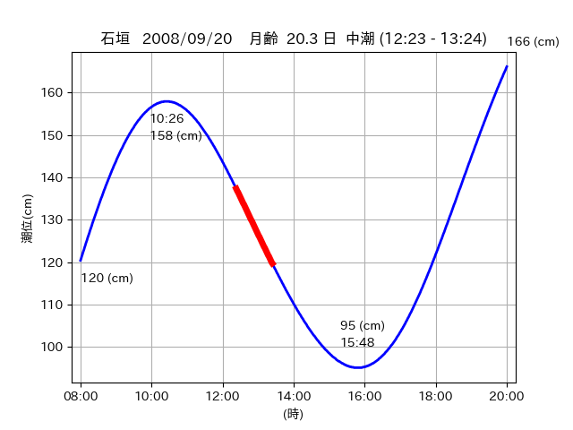

<!DOCTYPE html>
<html>
<head>
    
    <meta http-equiv="content-type" content="text/html; charset=UTF-8" />
    
        <script>
            L_NO_TOUCH = false;
            L_DISABLE_3D = false;
        </script>
    
    <style>html, body {width: 100%;height: 100%;margin: 0;padding: 0;}</style>
    <style>#map {position:absolute;top:0;bottom:0;right:0;left:0;}</style>
    <script src="https://cdn.jsdelivr.net/npm/leaflet@1.9.3/dist/leaflet.js"></script>
    <script src="https://code.jquery.com/jquery-3.7.1.min.js"></script>
    <script src="https://cdn.jsdelivr.net/npm/bootstrap@5.2.2/dist/js/bootstrap.bundle.min.js"></script>
    <script src="https://cdnjs.cloudflare.com/ajax/libs/Leaflet.awesome-markers/2.0.2/leaflet.awesome-markers.js"></script>
    <link rel="stylesheet" href="https://cdn.jsdelivr.net/npm/leaflet@1.9.3/dist/leaflet.css"/>
    <link rel="stylesheet" href="https://cdn.jsdelivr.net/npm/bootstrap@5.2.2/dist/css/bootstrap.min.css"/>
    <link rel="stylesheet" href="https://netdna.bootstrapcdn.com/bootstrap/3.0.0/css/bootstrap-glyphicons.css"/>
    <link rel="stylesheet" href="https://cdn.jsdelivr.net/npm/@fortawesome/fontawesome-free@6.2.0/css/all.min.css"/>
    <link rel="stylesheet" href="https://cdnjs.cloudflare.com/ajax/libs/Leaflet.awesome-markers/2.0.2/leaflet.awesome-markers.css"/>
    <link rel="stylesheet" href="https://cdn.jsdelivr.net/gh/python-visualization/folium/folium/templates/leaflet.awesome.rotate.min.css"/>
    
            <meta name="viewport" content="width=device-width,
                initial-scale=1.0, maximum-scale=1.0, user-scalable=no" />
            <style>
                #map_f5e2884bb8cca2f388b223d9a7d96712 {
                    position: relative;
                    width: 2048.0px;
                    height: 1600.0px;
                    left: 0.0%;
                    top: 0.0%;
                }
                .leaflet-container { font-size: 1rem; }
            </style>
        
</head>
<body>
    
    
            <div class="folium-map" id="map_f5e2884bb8cca2f388b223d9a7d96712" ></div>
        
</body>
<script>
    
    
            var map_f5e2884bb8cca2f388b223d9a7d96712 = L.map(
                "map_f5e2884bb8cca2f388b223d9a7d96712",
                {
                    center: [24.526, 124.314],
                    crs: L.CRS.EPSG3857,
                    ...{
  "zoom": 12,
  "zoomControl": true,
  "preferCanvas": false,
}

                }
            );

            

        
    
            var tile_layer_0ca7740fd8889159c9fcd7e65813769e = L.tileLayer(
                "https://cyberjapandata.gsi.go.jp/xyz/seamlessphoto/{z}/{x}/{y}.jpg",
                {
  "minZoom": 0,
  "maxZoom": 18,
  "maxNativeZoom": 18,
  "noWrap": false,
  "attribution": "\u5730\u7406\u9662\u5730\u56f3",
  "subdomains": "abc",
  "detectRetina": false,
  "tms": false,
  "opacity": 1,
}

            );
        
    
            tile_layer_0ca7740fd8889159c9fcd7e65813769e.addTo(map_f5e2884bb8cca2f388b223d9a7d96712);
        
    
            var marker_cbbb5c9daad298a6ba2e68f6da5e7290 = L.marker(
                [24.5474, 124.3197],
                {
}
            ).addTo(map_f5e2884bb8cca2f388b223d9a7d96712);
        
    
            var icon_a111b2d64bc7efe5bb006c91a3635059 = L.AwesomeMarkers.icon(
                {
  "markerColor": "orange",
  "iconColor": "white",
  "icon": "info-sign",
  "prefix": "glyphicon",
  "extraClasses": "fa-rotate-0",
}
            );
        
    
        var popup_91d7a400db5b69e7775171b990528792 = L.popup({
  "maxWidth": "100%",
});

        
            
                var html_5fbb91e8e4a8252a71a4510d681c9b31 = $(`<div id="html_5fbb91e8e4a8252a71a4510d681c9b31" style="width: 100.0%; height: 100.0%;"><table><tr><td></td></tr><tr><td><center>20080920 No.1 </center></table></td></tr></table</div>`)[0];
                popup_91d7a400db5b69e7775171b990528792.setContent(html_5fbb91e8e4a8252a71a4510d681c9b31);
            
        

        marker_cbbb5c9daad298a6ba2e68f6da5e7290.bindPopup(popup_91d7a400db5b69e7775171b990528792)
        ;

        
    
    
                marker_cbbb5c9daad298a6ba2e68f6da5e7290.setIcon(icon_a111b2d64bc7efe5bb006c91a3635059);
            
    
            var poly_line_4015b501968734f04fb1b1d601df690e = L.polyline(
                [[24.5474, 124.3197], [24.5397, 124.3161]],
                {"bubblingMouseEvents": true, "color": "#00FFFF", "dashArray": null, "dashOffset": null, "fill": false, "fillColor": "#00FFFF", "fillOpacity": 0.2, "fillRule": "evenodd", "lineCap": "round", "lineJoin": "round", "noClip": false, "opacity": 1.0, "smoothFactor": 1.0, "stroke": true, "weight": 3}
            ).addTo(map_f5e2884bb8cca2f388b223d9a7d96712);
        
    
            var marker_3f184cd2ec75aca574b0a3e3c89333f7 = L.marker(
                [24.5376, 124.3151],
                {
}
            ).addTo(map_f5e2884bb8cca2f388b223d9a7d96712);
        
    
            var icon_837baedf5c1508c9cc5cdbf050c4dffa = L.AwesomeMarkers.icon(
                {
  "markerColor": "orange",
  "iconColor": "white",
  "icon": "info-sign",
  "prefix": "glyphicon",
  "extraClasses": "fa-rotate-0",
}
            );
        
    
        var popup_63af62684cc2931fee604a73ce049c05 = L.popup({
  "maxWidth": "100%",
});

        
            
                var html_151000e931e2f9f51c883fd3bce5799c = $(`<div id="html_151000e931e2f9f51c883fd3bce5799c" style="width: 100.0%; height: 100.0%;"><table><tr><td></td></tr><tr><td><center>20080920 No.2 </center></table></td></tr></table</div>`)[0];
                popup_63af62684cc2931fee604a73ce049c05.setContent(html_151000e931e2f9f51c883fd3bce5799c);
            
        

        marker_3f184cd2ec75aca574b0a3e3c89333f7.bindPopup(popup_63af62684cc2931fee604a73ce049c05)
        ;

        
    
    
                marker_3f184cd2ec75aca574b0a3e3c89333f7.setIcon(icon_837baedf5c1508c9cc5cdbf050c4dffa);
            
    
            var poly_line_e9cda914a2f8a0b320a4b2de6a420854 = L.polyline(
                [[24.5376, 124.3151], [24.5306, 124.3141]],
                {"bubblingMouseEvents": true, "color": "#00FFFF", "dashArray": null, "dashOffset": null, "fill": false, "fillColor": "#00FFFF", "fillOpacity": 0.2, "fillRule": "evenodd", "lineCap": "round", "lineJoin": "round", "noClip": false, "opacity": 1.0, "smoothFactor": 1.0, "stroke": true, "weight": 3}
            ).addTo(map_f5e2884bb8cca2f388b223d9a7d96712);
        
    
            var marker_d61355db3e681bcb33c41dce87f32c3f = L.marker(
                [24.5307, 124.3139],
                {
}
            ).addTo(map_f5e2884bb8cca2f388b223d9a7d96712);
        
    
            var icon_0e7028609bf630592cc90b6f9bd05325 = L.AwesomeMarkers.icon(
                {
  "markerColor": "orange",
  "iconColor": "white",
  "icon": "info-sign",
  "prefix": "glyphicon",
  "extraClasses": "fa-rotate-0",
}
            );
        
    
        var popup_f8f74db4a934aeca51788856903155e4 = L.popup({
  "maxWidth": "100%",
});

        
            
                var html_d84e021e3f223914a866fda1946bc57e = $(`<div id="html_d84e021e3f223914a866fda1946bc57e" style="width: 100.0%; height: 100.0%;"><table><tr><td></td></tr><tr><td><center>20080920 No.3 </center></table></td></tr></table</div>`)[0];
                popup_f8f74db4a934aeca51788856903155e4.setContent(html_d84e021e3f223914a866fda1946bc57e);
            
        

        marker_d61355db3e681bcb33c41dce87f32c3f.bindPopup(popup_f8f74db4a934aeca51788856903155e4)
        ;

        
    
    
                marker_d61355db3e681bcb33c41dce87f32c3f.setIcon(icon_0e7028609bf630592cc90b6f9bd05325);
            
    
            var poly_line_7567148273a1f9353ccfdee5de8ee8df = L.polyline(
                [[24.5307, 124.3139], [24.522, 124.314]],
                {"bubblingMouseEvents": true, "color": "#00FFFF", "dashArray": null, "dashOffset": null, "fill": false, "fillColor": "#00FFFF", "fillOpacity": 0.2, "fillRule": "evenodd", "lineCap": "round", "lineJoin": "round", "noClip": false, "opacity": 1.0, "smoothFactor": 1.0, "stroke": true, "weight": 3}
            ).addTo(map_f5e2884bb8cca2f388b223d9a7d96712);
        
</script>
</html>